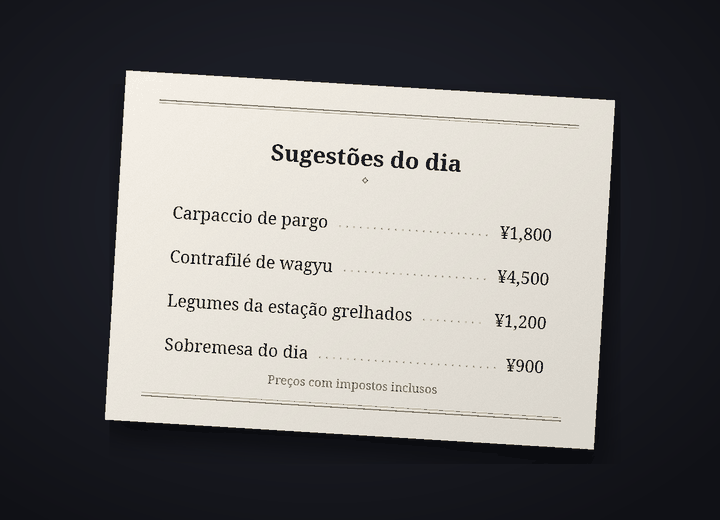

Bot de tradução para chats do Discord
Converse no Discord, cada um no seu idioma
O Cozirom é um bot do Discord que traduz o chat para o idioma da outra pessoa. Depois que você ativa, suas mensagens são publicadas traduzidas com o seu nome e a sua foto de perfil, e o texto das imagens também é traduzido.
As traduções são feitas por IA (Claude, da Anthropic). Elas podem ter erros, então confira o original quando for algo importante.
O que o bot faz
Um só bot traduz texto, imagens e voz
Os limites dos planos são contados em traduções. Uma mensagem traduzida para um idioma conta como 1.
6 recursos
Em traduções
Tradução automática
Use
/traduzir ativaruma vez e suas mensagens naquele servidor passam a ser publicadas no outro idioma, com o seu nome e a sua foto de perfil. O original fica em letra pequena embaixo da tradução, e o botão mostra o original completo.
mostra o original completo.Traduções1 por mensagem
Texto em imagens
Cardápios, telas de jogos, memes: se uma imagem tem texto, ele é lido e traduzido. Abra pelo ícone
 embaixo das imagens de quem ativou a tradução, ou com o botão direito. Só quem pediu vê o resultado, e imagens sem texto não contam.
embaixo das imagens de quem ativou a tradução, ou com o botão direito. Só quem pediu vê o resultado, e imagens sem texto não contam.TraduçõesCerca de 9 por imagem
Tradução na imagem
Pelo ícone
 , você recebe uma cópia da imagem com o texto original apagado e a tradução desenhada no lugar. A fonte começa em “Como o original”, parecida com as letras originais, e você pode trocar sem custo entre até 15 conjuntos de fontes, como “Serifada”, “Manuscrita” e “Quadrinhos”. Funciona melhor com texto na horizontal, como capturas de tela, memes, telas de jogos e cardápios, e só quem apertou vê o resultado.
, você recebe uma cópia da imagem com o texto original apagado e a tradução desenhada no lugar. A fonte começa em “Como o original”, parecida com as letras originais, e você pode trocar sem custo entre até 15 conjuntos de fontes, como “Serifada”, “Manuscrita” e “Quadrinhos”. Funciona melhor com texto na horizontal, como capturas de tela, memes, telas de jogos e cardápios, e só quem apertou vê o resultado.TraduçõesCerca de 19 por imagem


Exemplo: a foto original (um cardápio em japonês) e a mesma foto com o texto apagado e a tradução em português desenhada no lugar com a fonte “Serifada”. Mensagens de voz
Clique com o botão direito em uma mensagem de voz enviada pelo app do celular para ver o que foi dito e a tradução. Mensagens de até 3 minutos são transcritas, e mensagens sem fala não contam.
Traduções1 por segundo, mais a traduçãoUma mensagem de 10 segundos costuma dar 11
Quatro tons
Gíria, Casual, Amigável ou Formal, escolhido para cada servidor. Descontraído com os amigos, educado em um lugar novo. No plano Guest (grátis), você tem os quatro nos primeiros 14 dias e depois o tom amigável.
TraduçõesPagos: os quatro. Free: os primeiros 14 dias
31 idiomas
A tradução funciona em 31 idiomas. A interface e os nomes dos comandos do bot aparecem em 30 idiomas do Discord, então a outra pessoa configura tudo no próprio idioma.
Traduções31 para traduzir, 30 na interface

Como começar
Em três passos, a tradução aparece com o seu nome
Adicione o bot ao servidor
Um administrador do servidor adiciona o bot. Peça o link de convite no servidor de suporte.
Ative a tradução
Quem quiser ser traduzido usa
/traduzir ativarnaquele servidor. O bot adivinha o seu idioma e o da outra pessoa e abre o painel de configurações. Se não estiverem certos, troque nos menus suspensos.Escreva como sempre
Escreva como sempre e a tradução aparece com o seu nome. Comece no plano Guest (grátis) e troque de plano na página de planos quando precisar de mais.
Privacidade
As mensagens para traduzir e as imagens vão só para a Anthropic (EUA), e o áudio das mensagens de voz só para o Google (EUA). O bot guarda o original de uma tradução publicada por 14 dias e as traduções em cache por 30 dias, e não armazena imagens, áudio nem o texto lido deles. O conteúdo das conversas nunca vai para os logs, e /traduzir apagar-meus-dados apaga seus dados quando você quiser.